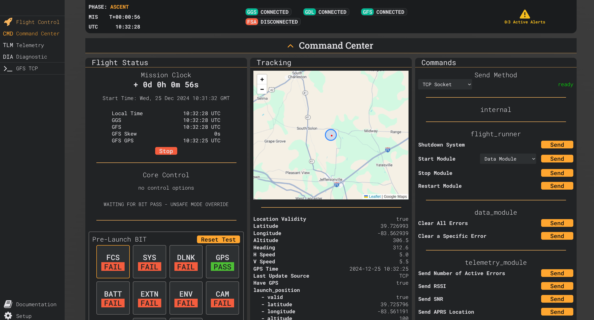

|
Giraffe
0.8.0
A Unified High Altitude Flight Observation and Control System. With homogeneous software and hardware, both on the ground and in the air.
|
|
Giraffe
0.8.0
A Unified High Altitude Flight Observation and Control System. With homogeneous software and hardware, both on the ground and in the air.
|
Read about why I'm doing this: https://joshuajer.red/Giraffe-Introduction/
Detailed software documentation (Doxygen): http://giraffe.joshuajer.red/
Check out the Giraffe GitHub Project to see what I'm currently working on.
The Giraffe Network - A diagram of Giraffe's components and how they interact with each other.
 The web client 'command center' page.
The flight computer prototype 2 PCB on top of a Pi 4. It's accompanied by the SA868 testing PCB with a dummy load antenna and it's supporting PCM2902 sound card testing PCB. Connected with debugging spaghetti.
>
This is the web client, used to configure the flight computer on the ground and to monitor/control it in the air.
Giraffe is a "flight command and control system" first developed for high altitude balloon flights.
The purpose of this project is mainly to have a 'learning lab' where I can experiment with all of the things that I'm interested in. This includes C++, Linux Embedded Development, Circuit Design, RF/Amateur Radio, Node.js, CI, interfacing hardware with the web, meta-programming, and more.
The system includes the following key components:
The flight software is written in C++, the web interface and ground stations are written in Node.js, and some Python is sprinkled in.
There are common components, including a large collection of configuration and data point metadata files that are used to generate code for both the flight system and the ground station. For example, to add a configuration option for the flight computer, you just need to add the information to the metadata file, run the generator, rebuild, and redeploy. It will then be inside of the flight software, configurable via the web interface, and safely implemented to restrained values to prevent misconfiguration. This works for integers, floats, strings, and enums.
Being a 'learning lab' project, nearly everything is built from the ground up including my own implementations of:
Libraries that I've written for this project:
Where I used existing 3rd party libraries:
Everything is designed to be modular and extensible so that it can be used for all types of HAB flights or even some other future implementations where command and control is needed. The software is made to work on any ARM based single board computer that runs Linux, like the Raspberry Pi but it is targeted towards the Pi Zero 2 and Pi 4.
The framework utilizes open communication protocols/modulation modes like APRS, AFSK, PSK31, and SSTV to allow for easy integration into existing software. Two way communication, which is currently in development, allows you to send commands to the flight computer from the ground station. There is a lot more included that isn't mentioned here, so please see the rest of the documentation.
Too see my more older, simplified, python implementation of this project check out the the AOS repo.
I'm currently working on hardware prototypes.
The flight computer is (will be) made up of two boards; it is targeted towards the Raspberry Pi Zero 2 and maintains the same footprint. The Raspberry Pi will be sandwiched between the two boards, with the top board being the "hat" and the bottom board being the "shoe".
The hat contains the majority of the circuitry. It is a four layer PCB containing the following:
>

You'll notice a lot of open space on the top of the PCB, this is to isolate the SAM-M8Q and to provide it a large ground plane. Although the ground plane size is out of spec I have had no issues with acquiring and maintaining a GPS lock.
There are a few known issues with prototype 2:
Other than that, this prototype is working great!
The shoe contains the telemetry circuitry. It is a four layer PCB containing the following:
The radio will be on the very bottom of the hardware stack, hopefully isolating it from the rest of the hardware.
Front

Back

I'm just waiting to finish debugging the SA868 and PCM2902 testing PCBs before ordering this one.

Left: SA868 Testing PCB with a dummy load antenna.
Right: PCM2902 Testing PCB with USB interface.
Unfortunately, I don't have the equipment to test it properly, but the SA868 PCB includes a low pass filter to take care of the messy RF output that these modules are known to have.
Configuration is no longer done through the config file, but instead through the web interface! This is where the ground station and flight system are configured.
Multiple clients can be connected to the web interface at once to allow for a team to monitor the flight together.
Development is no longer done by release, but instead features will be added as they are completed.